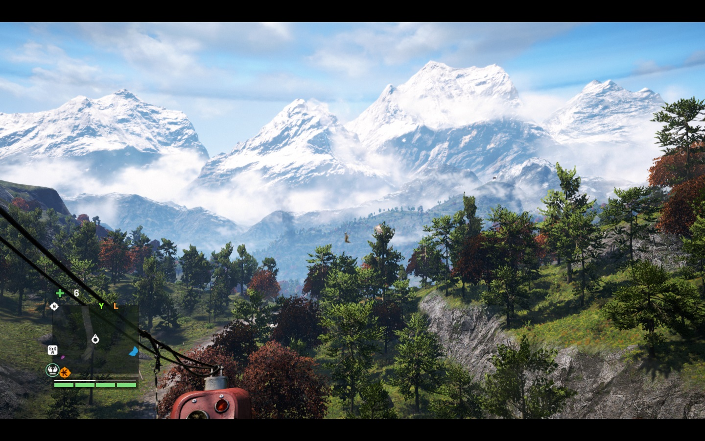

As seen by its' very heavy system requirements, Far Cry 4 is beautiful game. The character models and animals are especially beautiful. Looking at the landscape from the air really allows you to see the beauty of the game. The graphics are about on par with other games being released at this time
In the beautiful world of Kyrat, there is so much to do that you could play for hours and never get bored. With its open world nature, you can take on missions or activities in a variety of different ways, such as stealth or guns blazing. The controls are easy to understand and the AI is smart enough to give a real challenge. There are some glitches and performance issues on some computers but Ubisoft is working to address these issues.
The sound in the game is really what immerses you in the experience. Although it is nothing new to games, the sound in this game helps you to really become immersed in Kyrat.
Having not played through the whole game and not wanting to give away any spoilers, I can still say that the story so far is pretty enthralling. This is mostly thanks to the diversity and emotion of the main characters (particularly Pagan Min).
One of the best modes in Far Cry has to be the co-op. This allows you and a friend to join one campaign and wreak havoc on Kyrat together. Although you are not able to do missions in co-op, there is still plenty to do when you play. However, there some glitches in multiplayer that can be a little annoying to some but overall do not break the experience of the game.
A truly great experience for anyone into open-world first person shooters!